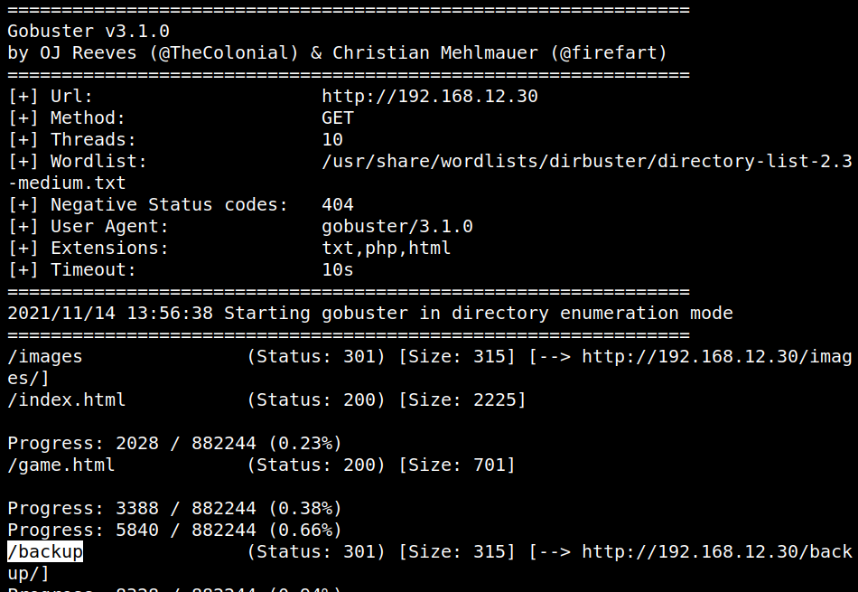
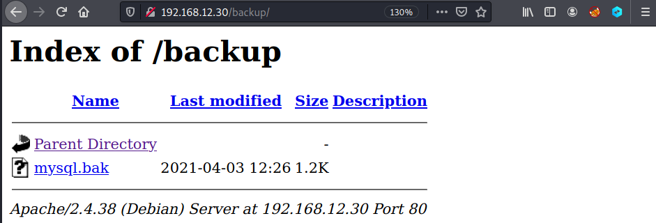
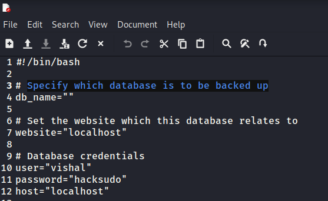

3.1 Webserver with Gobuster
Discover the directory and files on the webserver.
1. On your Kali Machine run the following command.
$gobuster dir -u http://192.168.12.30 -x txt,php,html --wordlist /usr/share/wordlists/dirbuster/directory-list-2.3-medium.txt
Output:

You have an interesting path (/backup) that might be interesting.
2. Navigate to http://192.168.12.30/backup

3. Click on the “mysql.bak” file an you'll see its content.

It's a script to back up databases.
Besides, you can see the database credentials.